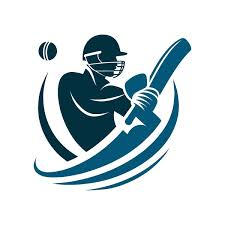

Cricket Career!This page is all about guiding you through the exciting world of cricket.Learn about how to start your journey, improve your skills, and explore different career paths in the sport. Whether you dream of becoming a player, coach, or analyst, this is the right place to begin your cricket career.
Cricket is a bat-and-ball game that is played between two teams of eleven players on a field, at the centre of which is a 22-yard (20-metre; 66-foot) pitch with a wicket at each end, each comprising two bails (small sticks) balanced on three stumps. Two players from the batting team, the striker and nonstriker, stand in front of either wicket holding bats, while one player from the fielding team, the bowler, bowls the ball toward the striker's wicket from the opposite end of the pitch.(If u want to see a full article) : visit her (Hello My Cricket)
VIRAT KOHLI holds top one ranking almost 2 years.This year also he holds the record number one in all three formats.
Cricket is more than just a game it's a passion and a career full of opportunities.With dedication, practice, and the right guidance, anyone can build a successful path in cricket.Start today, follow your dreams, and make your mark in the world of cricket.